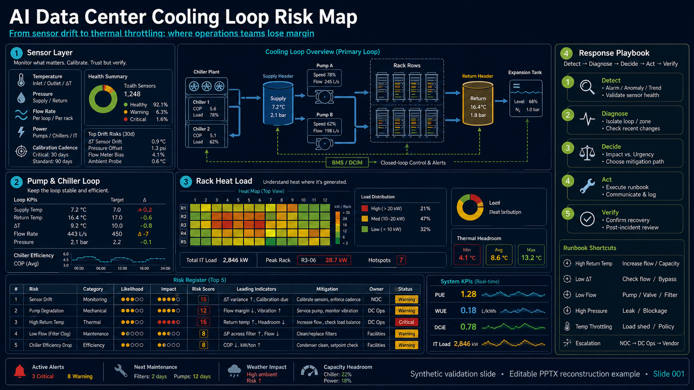

{kind=link}
{kind=link}
Source Slide

Synthetic 1672x941 source image generated for validation.
Source vs PPTX vs HTML
Contact sheet: source, PPTX raster, HTML screenshot, PPTX diff, and HTML diff.
Red diff panels are expected for this dense example because the output is an
editable native redraw, not a screenshot clone.
Evidence Summary
PPTX Package
PASS
Strict validation: 0 errors, 0 warnings.
Native Objects
659
242 text, 226 panels, 92 rules, 84 shapes, 14 icons.
Crop Coverage
0%
No full-slide source screenshot crop is used.
Strict Visual QA
FAIL
Documented limitation, not hidden.
How To Interpret This Case
| Good Signal | What It Means |
|---|---|
| Editable native object count | The deck was rebuilt with movable text boxes, shapes, panels, rules, and icons. |
| 0% crop coverage | The source slide image was not placed as one full-slide picture. |
| Strict PPTX validation passed | The PowerPoint package structure is valid and should not require repair. |
| Visual QA failure disclosed | The example is not claiming pixel-perfect reproduction of distorted AI microtext and ornamental density. |
Known Limits
The source contains AI-generated microtext and dense ornamental edge
texture. The reconstruction normalizes much of that into clean editable
PowerPoint objects, so strict pixel comparison reports large differences:
pptx_vs_source pixel diff 0.2583,
SSIM 0.4304, and edge diff 0.1742.